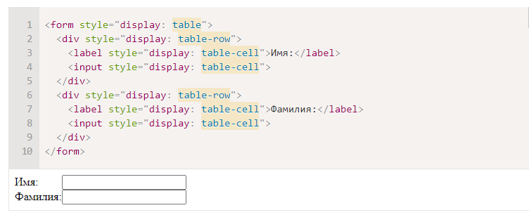
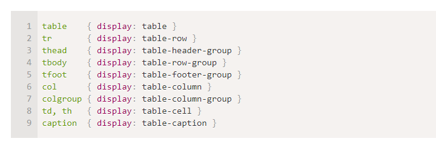

Значение table-*
Современные браузеры (IE8+) позволяют описывать таблицу любыми элементами, если поставить им соответствующие значения display.
Для таблицы целиком table, для строки – table-row, для ячейки – table-cell и т.д.
Пример использования:
Важно то, что это действительно полноценная таблица. Используются табличные алгоритмы вычисления ширины и высоты элемента, описанные в стандарте.
Это хорошо для семантической вёрстки и позволяет избавиться от лишних тегов.С точки зрения современного CSS, обычные table, tr, td и т.д. – это просто элементы с предопределёнными значениями display:
Очень подробно об алгоритмах вычисления размеров и отображении таблиц рассказывает стандарт CSS 2.1 – Tables.